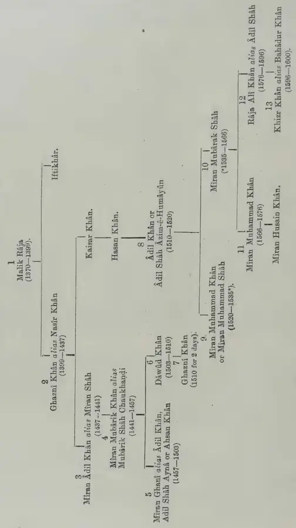
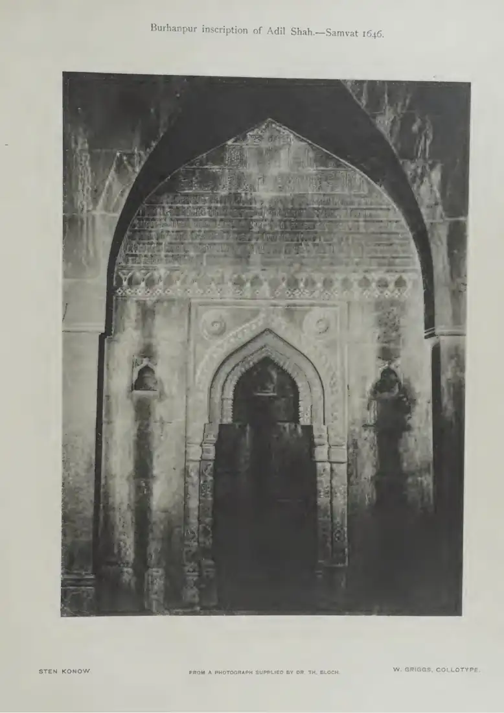

Burhânpûr inscription of Âdil Shâh
BURHANPUR SANSKRIT INSCRIPTION OF ADIL SHAH.
SAMVAT 1646.
BY HIRA LAL, B.A., M.R.A.S., NAGPUR.
Burhânpûr in the Nimâr district of the Central Provinces is an ancient historical site.1 It was the chief seat of the Fârûqî kings. They ruled over Khândêsh, which name the Muhammadans derived from their title of Khân. Their rule lasted from 1370 to 1600 A.D., when it was displaced by the Mughals. One of these Fârûqî kings built the Jum'a Masjid, in which besides Arabic inscriptions he had one carved in Sanskrit, which gives his genealogy and the date of the construction of the mosque. This inscription is in the northern corner and is written within an arch, so that the lines, which are 6 in number, are of unequal length. They contain five verses, besides the invocation Śrî srīshṭikartrē namaḥ in the commencement and the date in the end, both of which are in prose.
The letters are Nâgarî and are raised, not incised, in the same fashion as Persian letters are usually found carved. Orthography hardly calls for any remarks. The sign of avagraha has been omitted throughout. Over the na of -khâna- (1. 3) we find the Arabic sign of tashdid or double consonant.
The date is recorded in great detail, giving both the Vikrama and Śaka years, which are stated to be 1646 and 1511 respectively, the cyclic year being Virôdhi. The mosque is stated to have been completed on Monday, the 11th of the bright fortnight of the month Pausha, the exact moment in ghaṭīs and the nakshatra, lagna, yóga, karaṇa, etc., being added most precisely.2 The date in the Hijra era is given as 997 in Arabic above the inscription. Its English equivalent was kindly calculated for me by the late Professor Kielhorn, C.I.E., who found it to be Monday, the 5th January 1590. The astrological details are unique in a Muhammadan mosque and show the religious tendency of the later Fârûqî kings. In Burhânpûr much of the beliefs of the two religions (Hinduism and Islâm) got mixed up, traces of which are still conspicuously present there. As an instance may be cited the preachings of the Pīrzâdas, who are Musalmâns and who say that God will now become incarnate as Nishkalañkî.3 The Fârûqîs undoubtedly believed in astrology, as this inscription shows, and although the builder of the mosque took every care to erect it in the most auspicious moment completing it exactly in one year (as an Arabic inscription carved in the middle of the Masjid discloses) and wished by his pious act to ensure the long continuance of his dynasty, yet uncompromising destiny snatched away the crown from them, only ten years after the construction of the edifice. In fact Bahâdur Khân, the builder's son, was so much infatuated with superstition, that, in spite of his possessing the impregnable Asîrgarh fort with ten years' provisions, enormous treasures and numerous horses and cattle, he felt convinced that he could not hold his own against Akbar, of whom he believed that he was a necromancer and that magicians accompanied him to reduce the fort. A pestilence which broke out among the animals, was attributed to the black art, and he saw no way but to surrender to the mighty wizard. This mosque was thus destined to receive another inscription, which Akbar triumphantly caused to be carved recording his victory of Khândêsh in A.H. 1009 (A.D. 1600), annihilating the glory of the mosque builder's dynasty for ever. This inscription is in Persian and is conspicuously inscribed on the outside wall of the left hand minâr.
1 It was here that the famous Mumtâz Mahall (Arjumand Bânû Bêgam) breathed her last.
2 For details see translation at the end.
3 I have seen some Sanskrit manuscripts in Persian character in the possession of some Maulvis of Burhânpûr, preserved as heirlooms from their ancestors, who apparently studied them under State encouragement. Unfortunately most of these valuable records have been destroyed by the fires of 1897 and 1906 which caused damage to the extent of about 57 lakhs besides loss of life.
The chief interest of our inscription lies in the genealogy of the Fârûqîs given in it. According to it the first king was Râja Malik, whose son was Ghaznî (Khân). His son was Kaisar Khân, whose son was Hasan, from whom was born Âdil Shâh, whose son was Mubârakh. Âdil Shâh, the constructor of the mosque, was the son of this Mubârakh. This genealogy differs from those given by Firishta and Abul Fazl. According to the former Âdil Shâh was the 6th descendant from Malik Râja, and according to the latter the 8th, while according to our inscription he was the 7th. The tables given below will show at a glance how matters stand :—
| Sanskrit inscription. | Briggs' Firishta, Vol. IV., | Jarrett's Ain-i-Akbart, Vol. II. |
Râja Malik.
Gaznî (Khân).
Kaisar Khân.
Hasan (Khân).
Âdil Shâh.
Mubârakh.
Âdil Shâh.
Malik Râja.
Nasîr Khân.
Hasan Khân.
Âdil Khân.
Mubârik.
Râja Alî Khân.
Malik Râji.
Ghiznî Khân, title Nasîr Khân.
Mîran Shâh alias Âdil Shâh.
Mubârik Shâh Chaukhañdi.
Âdil Shah Aynâ alias Ahsan Khân.
Âdil Shâh.
Mubârik Shâh.
Râja Alî Khân, title Âdil Shâh.
The Áin-i-Akbarí states that “ Bahādur Khān (who was the son of Rája Alī Khān) was 9th in descent from Malik Ráji.” This has led Colonel Jarrett,1 as it would indeed lead others, to suppose that the list given there is genealogical and that Ahsan Khān, the fifth king, was identical with Hasan Khān, who, as a matter of fact, was never a king. Hasan Khān belonged to a collateral branch of the family, whose son became king on the failure of male issue in the main line.
The Áin-i-Akbarí has mixed up the succession list with the genealogical table. Míran Sháh, the third descendant, was really a grandson of Malik Rája, but the point missed is that he was not the direct ascendant of the last Ádil Sháh or Rája Alī Khān. The crown first went in Míran Sháh's line up to Ádil Sháh Aynâ, who was succeeded by his brother Dáwúd Khān, and the latter by his son Ghaznī Khān, who was poisoned two days after ascending the throne. Abul Fazl does not mention Ghaznī Khān at all, probably because his succession to the throne was only nominal. Ghaznī Khān left no son,2 and hence the crown went to Rája Alī Khān's grandfather Ádil Sháh or Ádil Khān. The three kings Míran Sháh, Mubárak Sháh and Ádil Sháh Aynâ were not thus direct ascendants of Rája Alī Khān. The Áin-i-Akbarí list should therefore be left out of consideration, and the question must be decided between our inscription and Firishta's list. Briggs3 takes Hasan to be the son of Nasīr Khān, relying on Firishta's assertion that “ Ádil was the son of Hasan and grandson of Nasīr Khān.” If Hasan were the son of Nasīr Khān, he would be the brother of Míran Sháh, who was crowned king after his father's death. We would, therefore, have to suppose that Míran's nephew came to the throne after the expiry of three
1 See his Átn-i-Akbart, Vol. II., p. 226, footnote.
2 Briggs' Firishta, Vol. IV., p. 303.
3 Loc. cit.
generations, which is an unlikely supposition. There is nothing to show that Ādil Khân (Hasan's son) was extraordinarily long-lived.1 It, therefore, seems very probable that there was an intervening generation between Nasîr Khân and Hasan Khân, and the missing link is supplied by the Sanskrit inscription in the person of Kaisar Khân, son of Nasîr and father of Hasan Khân. In the inscription Kaisar Khân is merely called a vîra or hero and not a king, and although Hasan was also never a king, the epithet of kshitîśa was apparently added to his name by way of courtesy, to tickle the ruling prince. Regarding the sources of his information Firishta records2 that when he visited Burhânpûr in A.H. 1013 (A.D. 1604), he asked Mirzâ Alî Isfahânî if any history existed of the Fârûqî family. The Mirzâ replied that he knew of none, but said that he once saw a genealogy3 of the family down to Malik Râja, which he copied and took along with him. It would thus appear that no history of the kings later than Malik Râja existed at all. So the information he collected was apparently from traditions or other casual records, while the writer of the Sanskrit inscription must certainly have been supplied with information from the royal family, as it was intended to be a permanent record, in one of the greatest works the king built. It is, therefore, more reliable than Firishta and leaves no room for doubt as to its authenticity.4 A revised genealogy of the Fârûqî kings will be found below on p. 310.
TEXT.5
1 ॥ श्री सृष्टिक्त्रे °नूमः । अव्यत्कं(कं) व्यापकं नित्यं गुणातीतं चिदात्मवं
[1*] द्यत्कस्य(व्यक्तस्य) कारणं वंदे व्यक्ताव्यक्तं तमीश्वरं7 ॥१॥ यावचन्द्रा-
क्षंतारा-
2 दि क्षितिः स्यादंवरांगणै(णे) [1*] तावत्फारुकिवंशोसौ चिरं नंदह
भूतले ॥२॥ वंग्येथ तस्मिन्किल फारुकींद्रो वभूव राजा मलिकाभि-
धानः [1*] तस्याभवत्सूनु-
3 रुदारचेताः कुलावतंसो गजनीनरेशः8 ॥२॥ तस्मादभूत्केसरखानवीरः पुत्र-
स्तदीयो हसनक्षितीशः [1*] तस्मादभूदेदलशाहभूपः पुत्रोभवत्तस्य
मुबारखेंद्रः ॥8॥
1 The average for a generation in the line of which Ghaznî Khân was the last, is 23 years, while in the line of Râja Alî Khân it is 29 years. According to the Sanskrit inscription the average for the latter is reduced to less than 26, taking the reckoning up to the death of Mîran Muhammad in 1576, but for the minority of whose son Husain Khân, Râja Āli Khân would have had no opportunity to sit on his brother's throne.
2 It may be noted that the visit was paid 14 years after our inscription was carved.
3 Firishta gives this as follows:—
Malik Râja, the son of Khân Jahân, the son of Alî Khân, the son of Uthmân Khân, the son of Simion Shâh, the son of Ashab Shâh, the son of Armian Shâh, the son of Ibrâhîm Shâh of Balkh, the son of Ādam Shâh, the son of Ahmad Shâh, the son of Mahmûd Shâh, the son of Muhammad Shâh, the son of Āzim Shâh, the son of Ashghar, the son of Muhammad Ahmad, the son of the Imâm Nasîr Abdulla, the son of Omar-ul-Faruq entitled Khalifâ or representative of the last of the prophets.
4 If anybody would assert that the Sanskrit composer might have made a mistake in understanding the genealogy, all doubts would vanish by reading the Arabic inscription on the top of the Sanskrit one reproduced in the accompanying plate. Line 3 as deciphered by Munshî Inâmullah Koân, Manager of the Mosque, reads as follows:— 'Ādil Shâh bin Mubârak Shâh bin 'Ādil Shâh bin Hasan Khân bin Quisar Khân bin Ghaznî Khân bin Malik Khân al-Fârûqî al 'Adlî.
5 From my personal transcript from the original and two subsequent ones kindly supplied by Mr. B. Bal-kriehna Bhâte, Headmaster, Middle School, Burhânpur, and a photograph.
6 Read °क्षे नमः
7 This and the next verse are in the Anushtubh metre.
8 This and the next are in the Upajâtî metre.
Plate 1 is bound after this page.
4 तत्सृनुः क्षितिपालमौलिमुकुटव्याघृष्टपादांबुजः सत्कीर्तिर्विलसव्यतापवशगा-
मित्रः क्षितीशेश्वरः [1*] यस्याह्वर्निशमानतिगुणगणातीते परं व्रह्मणि
श्रीमानेदलभूपति-
5 विंजयते1 भूपालचूडामणिः2 ॥५॥ स्वस्ति श्री संवत् १६४६ वर्षं शाक्रे3
१५११ विरोधिसंवत्सरे पौषमासे शुक्लपत्ते १० घटी २३ सहैका-
दश्यां तिथौ सोमे [क]त्तिकाघटी ३३ राह4 रोहि-
6 ख्यां शुभ घटी ४२ योगे वण्णिजकरणेस्मिन् दिने रात्रिगतघटी
११ समये कन्यालग्न श्रीमुबारखशाहसुतश्री5 ७ एदलशाहराज्ञी
मसीतिरियं निर्मिता स्वधर्मपालनार्थं. ॥
TRANSLATION.
(Line 1). Salutation to the glorious Creator of the world.
(Verse 1). I bow down to the Imperceptible, the (All-)pervading, eternal (one who is) past (all) qualities, whose essence is mind, who is the cause of what is manifest—to that God who is both manifest and non-manifest.
(V. 2). As long as the moon, the sun and the stars, etc., exist in the firmament, so long may this Fâruki family live happily on the face of the earth.
(V. 3). In that family there was first the lord of Fârukîs by name Râjâ Malik, whose son was king Ghaznî5 (Khân) who was of an exalted mind, the diadem of the family.
(V. 4). From him was (born) the hero Kaisar Khân whose son was Hasan (Khân), the lord of the earth. From him was born king Âdil Shâh, whose son was lord Mubârakh.
(V. 5). Victorious is his son, the illustrious king Âdil, the crest jewel of (other) kings, whose lotus feet are rubbed by the diadems in the crowns of kings (prostrating themselves before him), (who is) of good reputation, and whose enemies have submitted to his prowess, (who is) the lord of kings (and) who bows day and night to the Supreme Being who is past all qualities.
(Ll. 5—6). Hail! Prosperity! This mosque was built by the king Srî 76 Âdil Shâh, son of the illustrious Mubârakh Shâh, for fostering his own religion, in the Samvat year 1646, Šaka 1511, in the Virôdhi samvatsara, in the month of Pausha, in the bright fortnight, on the 10th tithî (lasting for) 23 ghaṭis, followed by the eleventh tithî, on Monday, in the Krittikâ (nakshatra lasting for) 33 ghaṭis with (i.e. followed by) Rôhiñî in the Śubha yôga lasting up to ghaṭî 42, in the Vanija karaṇa, at the time when 11 ghaṭis of the night on this day had passed and in the Kanyâ lagna.
1 Read विंजयते.
2 Metre : Sârdûlavikrîđita.
3 Read श्के.
4 Read सह.
5 This king is well-known by the name of Naśir Khân, the title which he adopted on ascending the throne. General Cunningham erroneously took Ghaznî narĉśaḥ to mean King of Ghazuñ (see his Reports, Vol. IX, p. 117), not being aware that Ghaznî was a personal name. Firishta omitted this name, but Abul Fazl has mentioned it (see Jarrett's Ain-i-Akbarî, Vol. II, p. 226).
6 The number of śris written for Râjas is usually 103, but here a single figure stands for the highest number, as 6 are written for a preceptor, 5 for a master, 4 for an enemy, 3 for a friend, 2 for a servant, and 1 for a wife or a son.
Genealogy of the Fārūqī Kings of Khandēsh.

N.B.—Figures on the top of names indicate the order of succession, and those within brackets the periods of their rule.
* This date is doubtful, Firishta being inconsistent. See Briggs' translation Vol. IV., p. 142, which gives the date of his death as A.H. 943, whereas on p. 312 A.H. 942 is given. As Bahâdur Shâh of Gujarat died on 14th Feb. 1537 (bîd p. 141) Mîran Muhammad Shâh, who succeeded him also in Gujarat, was evidently living in 1587, and Mubârak could not have become king before that date.
